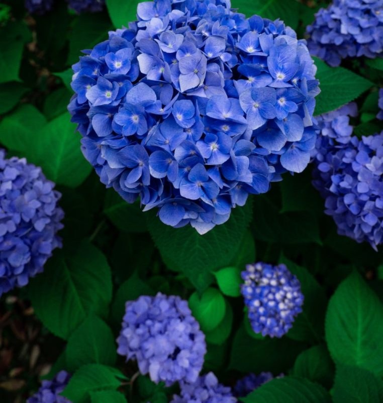
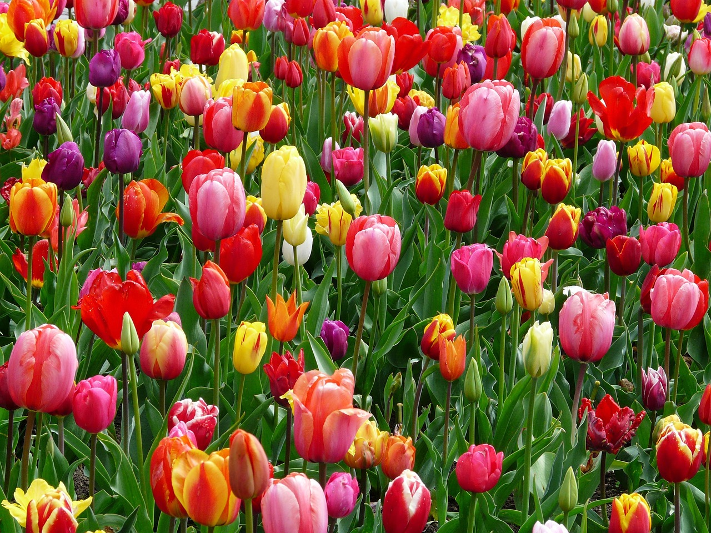
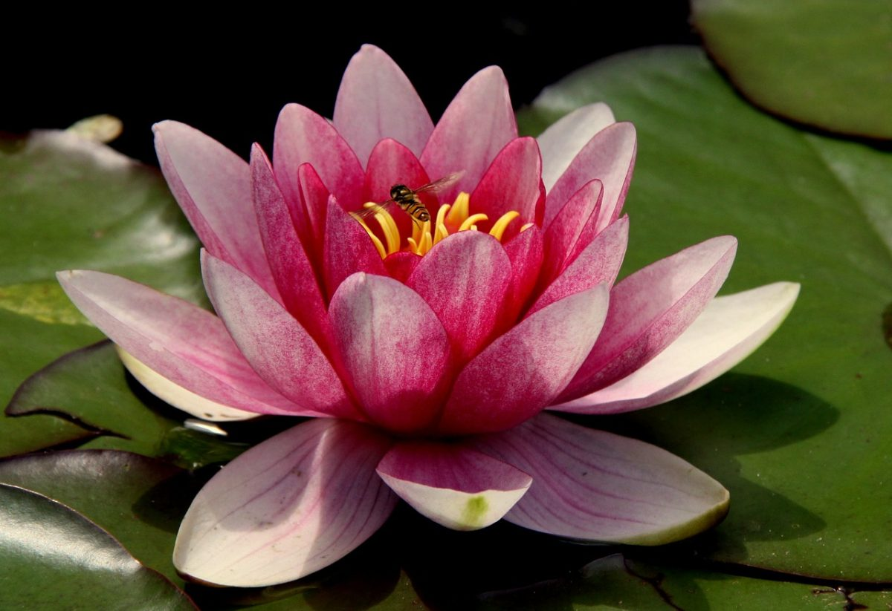
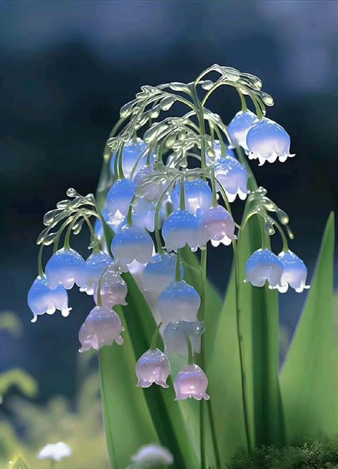
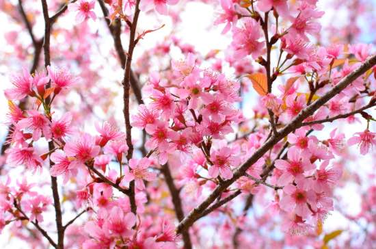
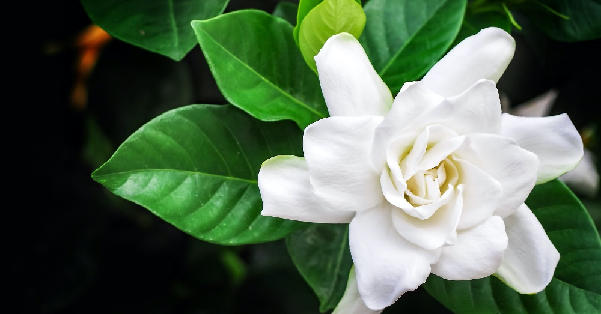
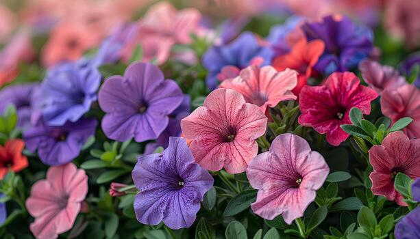
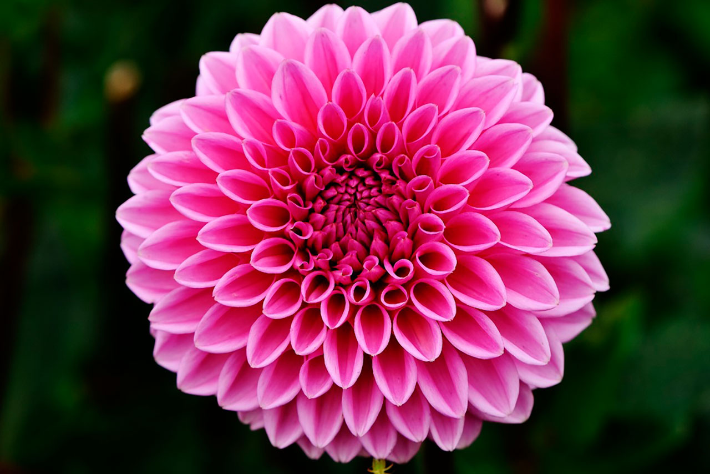
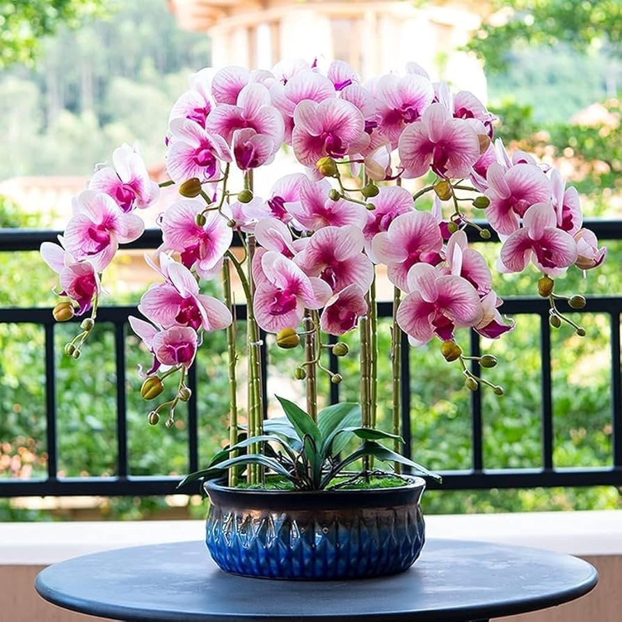

He preparado este pequeño jardín pensando en lo bonita que es tu presencia en mi vida. Toca el botón para empezar.
Toca cada flor para descubrir un pedacito de todo lo bonito que transmites.

La hortensia representa la gratitud más pura. No sabes lo agradecida que está mi alma por haber encontrado una amiga tan dulce, atenta y hermosa como tú. Gracias por existir.

El tulipán simboliza el amor sincero y la alegría del corazón. Tu risa y tu buena vibra tienen la magia de iluminar hasta el día más gris. ¡Eres un rayito de sol!

La flor de loto florece con elegancia en cualquier adversidad. Admiro profundamente tu fuerza, tu paz interior y la calma tan bonita que transmites siempre.

Representa el regreso de la felicidad. Tu sola presencia llena el ambiente de ternura, haciendo que cada momento a tu lado sea un recuerdo precioso.

Simboliza lo maravilloso y valioso de la vida. La delicadeza con la que tratas a los demás deja una huella imborrable en mi corazón. Eres verdaderamente inolvidable.

La gardenia transmite una paz del alma única. La dulzura y el amor con el que escuchas y apoyas hacen de ti una amiga invaluable. Te quiero muchísimo.

Es el abrazo cálido y la compañía verdadera. Saber que cuento con tu amistad es uno de los regalos más bonitos que me ha dado la vida.

Representa la lealtad y la autenticidad. Destacas en todo lo que haces por ser una persona noble, transparente y con un corazón de oro.

Símbolo de belleza única y admiración. Nunca olvides lo increiblemente valiosa, talentosa y especial que eres para todos los que te rodeamos.
El girasol siempre busca la luz. Con tu energía bonita, tu sonrisa y tu calidez, siempre logras llenar de alegría la vida de quienes te queremos.
Cada una de estas flores representa solo una pequeña parte de lo maravillosa que eres. Gracias por brindarme tu amistad tan especial. ¡Te quiero mucho, Helen! 💖